# Setup chunk: imports, project paths, constants, and shared helper functions.
import io
import os
import re
import shutil
import subprocess
import tempfile
import zipfile
from pathlib import Path
import matplotlib.pyplot as plt
import numpy as np
import pandas as pd
import plotnine as p9
import requests
from IPython.display import display
from requests.adapters import HTTPAdapter
from urllib3.util.retry import Retry
PROJECT_ROOT = Path.cwd()
RAW_DIR = PROJECT_ROOT / "data" / "raw"
FIG_DIR = PROJECT_ROOT / "outputs" / "figures"
PROCESSED_DIR = PROJECT_ROOT / "data" / "processed"
ANALYSIS_YEAR_START = 2001
ANALYSIS_YEAR_END_CAP = 2024
RAW_DIR.mkdir(parents=True, exist_ok=True)
FIG_DIR.mkdir(parents=True, exist_ok=True)
PROCESSED_DIR.mkdir(parents=True, exist_ok=True)
COMMON_DROP_COLS = {"DGUID", "UOM", "UOM_ID", "SCALAR_FACTOR", "SCALAR_ID", "VECTOR","COORDINATE", "STATUS", "SYMBOL", "TERMINATED", "DECIMALS",}
PROVINCES = ["Newfoundland and Labrador", "Prince Edward Island", "Nova Scotia","New Brunswick", "Quebec", "Ontario", "Manitoba", "Saskatchewan", "Alberta", "British Columbia", "Yukon", "Northwest Territories", "Nunavut",]
PROVINCES_LOWER = {p.lower() for p in PROVINCES}
GEO_COL = "GEO"
REF_COL = "REF_DATE"
VALUE_COL = "VALUE"
STATCAN_SESSION = requests.Session()
STATCAN_SESSION.mount(
"https://",
HTTPAdapter(
max_retries=Retry(
total=5,
connect=5,
read=5,
backoff_factor=2,
status_forcelist=[429, 500, 502, 503, 504],
allowed_methods=frozenset(["GET"]),
)
),
)
STATCAN_SESSION.headers.update({"User-Agent": "JSC370-canada-migration/1.0"})
def pull_statcan(table_id: str) -> pd.DataFrame:
"""table_id e.g. '17100149' (no dashes)."""
url = f"https://www150.statcan.gc.ca/n1/tbl/csv/{table_id}-eng.zip"
with tempfile.NamedTemporaryFile(suffix=".zip", delete=False) as tmp:
tmp_path = Path(tmp.name)
try:
try:
with STATCAN_SESSION.get(url, stream=True, timeout=(120, 3600)) as r:
r.raise_for_status()
with tmp_path.open("wb") as f:
for chunk in r.iter_content(chunk_size=1024 * 1024):
if chunk:
f.write(chunk)
except requests.RequestException:
if shutil.which("curl") is None:
raise
subprocess.run(
[
"curl",
"-fL",
"--retry", "5",
"--retry-all-errors",
"--connect-timeout", "120",
"-o", str(tmp_path),
url,
],
check=True,
)
with zipfile.ZipFile(tmp_path) as z:
fname = [f for f in z.namelist() if f.endswith(".csv") and "MetaData" not in f][0]
with z.open(fname) as f:
return pd.read_csv(f, encoding="latin-1", low_memory=False)
finally:
tmp_path.unlink(missing_ok=True)
def normalize_statcan_columns(df: pd.DataFrame) -> pd.DataFrame:
"""Normalize headers, including BOM/quote artifacts in REF_DATE."""
rename_map = {
c: str(c).replace("", "").replace("", "").strip().strip('"')
for c in df.columns
}
rename_map = {
old: (REF_COL if new.upper() == REF_COL else GEO_COL if new.upper() == GEO_COL else new)
for old, new in rename_map.items()
}
return df.rename(columns=rename_map)
def extract_year(value) -> float:
if pd.isna(value):
return np.nan
m = re.search(r"(19|20)\d{2}", str(value))
return float(m.group(0)) if m else np.nan
def filter_to_analysis_window(
df: pd.DataFrame,
year_col: str = "year",
start_year: int = ANALYSIS_YEAR_START,
end_year_cap: int = ANALYSIS_YEAR_END_CAP,
) -> tuple[pd.DataFrame, int | None]:
"""Keep rows between start_year and min(end_year_cap, latest year in df)."""
out = df.copy()
if year_col not in out.columns:
return out, None
years = pd.to_numeric(out[year_col], errors="coerce")
out = out.assign(**{year_col: years}).dropna(subset=[year_col]).copy()
if out.empty:
return out, None
out[year_col] = out[year_col].astype(int)
latest_available = int(out[year_col].max())
applied_end_year = int(min(end_year_cap, latest_available))
out = out[out[year_col].between(start_year, applied_end_year, inclusive="both")].copy()
return out, applied_end_year
def is_cma_geo(geo_value) -> bool:
if pd.isna(geo_value):
return False
return bool(re.search(r"\(cma\)", str(geo_value), flags=re.IGNORECASE))
def normalize_geo_key(s: str) -> str:
s = str(s).strip()
s = re.sub(r"\s*\(C[MA]{1,2}\),?", ",", s)
s = re.sub(r"\s*-\s*", "-", s)
s = re.sub(r",\s*,", ",", s)
s = re.sub(r"\s+", " ", s).strip().rstrip(",").strip()
return s.lower()
def is_cma_from_reference(geo_value, cma_geo_keys: set[str]) -> bool:
if pd.isna(geo_value):
return False
g = str(geo_value)
if is_cma_geo(g):
return True
return normalize_geo_key(g) in cma_geo_keys
def prune_loaded_table(df: pd.DataFrame) -> pd.DataFrame:
"""Drop shared StatCan metadata columns, keep all analytical/value dimensions."""
out = df.copy()
drop_cols = [c for c in out.columns if c.upper().strip().strip('"') in COMMON_DROP_COLS]
if drop_cols:
out = out.drop(columns=drop_cols)
return out
AGE_25_44_LABELS = ["25 to 29 years", "30 to 34 years", "35 to 39 years", "40 to 44 years"]
AGE_65PLUS_LABELS = ["65 to 69 years", "70 to 74 years", "75 to 79 years", "80 to 84 years", "85 to 89 years", "90 years and older"]
def build_age_feature_panel(
age_df: pd.DataFrame,
geo_col: str,
ref_col: str,
value_col: str = "VALUE",
year_min: int = ANALYSIS_YEAR_START,
year_max: int = ANALYSIS_YEAR_END_CAP,
) -> pd.DataFrame:
age = age_df[[geo_col, ref_col, "Gender", "Age group", value_col]].copy()
age[value_col] = pd.to_numeric(age[value_col], errors="coerce")
age["year"] = pd.to_numeric(age[ref_col], errors="coerce").astype("Int64")
age = age[
age["Gender"].eq("Total - gender")
& age["year"].between(year_min, year_max, inclusive="both")
].dropna(subset=[geo_col, "year", value_col])
cohort_map = {"All ages": "population"} | {label: "pop_25_44" for label in AGE_25_44_LABELS} | {label: "pop_65plus" for label in AGE_65PLUS_LABELS}
age_panel = (
age.assign(cohort=age["Age group"].map(cohort_map))
.dropna(subset=["cohort"])
.groupby([geo_col, "year", "cohort"], as_index=False)[value_col]
.sum()
.pivot(index=[geo_col, "year"], columns="cohort", values=value_col)
.reset_index()
.rename_axis(None, axis=1)
)
for col in ["population", "pop_25_44", "pop_65plus"]:
if col not in age_panel.columns:
age_panel[col] = np.nan
age_panel = age_panel[age_panel["population"] > 0].copy()
age_panel["share_25_44"] = age_panel["pop_25_44"] / age_panel["population"]
age_panel["share_65plus"] = age_panel["pop_65plus"] / age_panel["population"]
return age_panel[[geo_col, "year", "share_25_44", "share_65plus", "population"]]
def save_and_show(fig: plt.Figure, file_name: str):
out_path = FIG_DIR / file_name
fig.savefig(out_path, dpi=180, bbox_inches="tight")
plt.show()
print(f"Saved figure: {out_path}")JSC370 Canada Migration: Step 1 and Step 2
Step 1 — Data Pull
# Setup chunk: pull/cache all StatCan tables, apply CMA filtering, and prepare summary objects.
TABLE_SPECS = [
{"var": "df_pop", "table_id": "17100149", "save_path": RAW_DIR / "17100149.csv"},
{"var": "df_rent", "table_id": "34100133", "save_path": RAW_DIR / "34100133.csv"},
{"var": "df_lfs", "table_id": "14100020", "save_path": RAW_DIR / "14100020.csv"},
{"var": "df_age", "table_id": "17100148", "save_path": RAW_DIR / "17100148.csv"},
{"var": "df_rd", "table_id": "27100273", "save_path": RAW_DIR / "27100273.csv"},
]
dfs = {}
CMA_GEO_KEYS: set[str] = set()
step1_summary_rows = []
missingness_col_frames = []
missingness_geo_year_frames = []
for spec in TABLE_SPECS:
var_name, table_id, save_path = spec["var"], spec["table_id"], spec["save_path"]
if not save_path.exists():
df, source = pull_statcan(table_id), "downloaded"
df.to_csv(save_path, index=False)
else:
df, source = pd.read_csv(save_path, low_memory=False), "cached"
df = prune_loaded_table(normalize_statcan_columns(df))
geo_col = GEO_COL if GEO_COL in df.columns else None
ref_col = REF_COL if REF_COL in df.columns else None
if var_name == "df_pop" and geo_col:
df = df[df[geo_col].apply(is_cma_geo)].copy()
CMA_GEO_KEYS = set(df[geo_col].dropna().astype(str).map(normalize_geo_key).unique())
elif var_name in {"df_age", "df_rent"} and geo_col and len(CMA_GEO_KEYS):
df = df[df[geo_col].astype(str).map(normalize_geo_key).isin(CMA_GEO_KEYS)].copy()
dfs[var_name] = df
year_series = df[ref_col].apply(extract_year).dropna().astype(int) if ref_col else pd.Series(dtype=int)
step1_summary_rows.append(
{
"df": var_name,
"table_id": table_id,
"source": source,
"rows": int(len(df)),
"cols": int(df.shape[1]),
"n_geo": int(df[geo_col].nunique()) if geo_col else np.nan,
"year_min": int(year_series.min()) if len(year_series) else np.nan,
"year_max": int(year_series.max()) if len(year_series) else np.nan,
}
)
missingness_col_frames.append(
df.isna().sum().rename_axis("column").reset_index(name="null_count").assign(df=var_name)
)
if geo_col and ref_col:
tmp = df[[geo_col, ref_col]].copy()
tmp["year"] = tmp[ref_col].apply(extract_year).astype("Int64")
row_has_null = df.isna().any(axis=1)
cma_mask = tmp[geo_col].apply(lambda x: is_cma_from_reference(x, CMA_GEO_KEYS))
missingness_geo_year_frames.append(
tmp.loc[row_has_null & cma_mask, [geo_col, "year"]]
.dropna()
.groupby([geo_col, "year"], as_index=False)
.size()
.rename(columns={"size": "rows_with_any_null"})
.assign(df=var_name)
)
df_pop, df_rent, df_lfs, df_age, df_rd = (dfs[k] for k in ["df_pop", "df_rent", "df_lfs", "df_age", "df_rd"])
step1_summary_df = pd.DataFrame(step1_summary_rows)
missingness_by_col_df = pd.concat(missingness_col_frames, ignore_index=True)
missingness_by_geo_year_df = (
pd.concat(missingness_geo_year_frames, ignore_index=True)
if missingness_geo_year_frames
else pd.DataFrame(columns=[GEO_COL, "year", "rows_with_any_null", "df"])
)
display(step1_summary_df)| df | table_id | source | rows | cols | n_geo | year_min | year_max | |
|---|---|---|---|---|---|---|---|---|
| 0 | df_pop | 17100149 | cached | 3344454 | 6 | 43 | 2001 | 2024 |
| 1 | df_rent | 34100133 | cached | 24964 | 5 | 40 | 1987 | 2025 |
| 2 | df_lfs | 14100020 | cached | 962280 | 7 | 11 | 1990 | 2025 |
| 3 | df_age | 17100148 | cached | 370875 | 5 | 43 | 2001 | 2025 |
| 4 | df_rd | 27100273 | cached | 173004 | 7 | 15 | 1963 | 2025 |
Step 2 — Per-Dataset EDA (No Merge)
availability_rows = []2a — df_pop (17100149, Components of population change)
pop = df_pop.copy()
geo_col, ref_col, value_col = GEO_COL, REF_COL, "VALUE"
component_col, gender_col, age_col = "Components of population growth", "Gender", "Age group"
target_components = {"net interprovincial migration": "Net interprovincial migration", "net intraprovincial migration": "Net intraprovincial migration"}
pop[value_col] = pd.to_numeric(pop[value_col], errors="coerce")
pop["year"] = pop[ref_col].apply(extract_year).astype("Int64")
component_key = pop[component_col].astype(str).str.strip().str.lower()
pop = pop[component_key.isin(target_components)].copy()
if gender_col in pop.columns:
pop = pop[pop[gender_col] == "Total - gender"].copy()
if age_col in pop.columns:
pop = pop[pop[age_col] == "All ages"].copy()
pop["component_clean"] = pop[component_col].astype(str).str.strip().str.lower().map(target_components)
pop, _ = filter_to_analysis_window(pop, "year")
missing_pop_values = int(pop[value_col].isna().sum())
pop = pop.dropna(subset=[value_col, "year"])
pop_cma_year = pop.groupby([geo_col, "year", "component_clean"], as_index=False)[value_col].sum()
pop_nat = pop_cma_year.groupby(["year", "component_clean"], as_index=False)[value_col].sum()
g_ts = (
p9.ggplot(pop_nat, p9.aes(x="year", y=value_col, color="component_clean"))
+ p9.geom_line(size=1.0)
+ p9.geom_point(size=1.7)
+ p9.geom_vline(xintercept=[2020, 2021], linetype="dashed", color="gray")
+ p9.labs(
title="National Aggregate Net Inter/Intra-provincial Migration\n(sum across CMAs)",
x="Year",
y="Net migration",
color="Component",
)
+ p9.theme_minimal()
+ p9.theme(
figure_size=(11, 5),
plot_title=p9.element_text(ha="center"),
)
)
p9.ggsave(g_ts, filename=str(FIG_DIR / "2a_pop_national_inter_intra_timeseries.png"), width=11, height=5, units="in", dpi=180, verbose=False)
display(g_ts)
q = pop_cma_year.groupby("component_clean")[value_col].quantile([0.01, 0.99]).unstack()
q.columns = ["q01", "q99"]
q = q.reset_index()
pop_dist = pop_cma_year.merge(q, on="component_clean", how="left")
pop_dist = pop_dist[pop_dist[value_col].between(pop_dist["q01"], pop_dist["q99"])].copy()
g_dist = (
p9.ggplot(pop_dist, p9.aes(x=value_col))
+ p9.geom_histogram(bins=40, fill="#2F7FB8", color="white", alpha=0.85)
+ p9.facet_wrap("~component_clean", ncol=2, scales="free_y")
+ p9.labs(
title="Distribution of Net Inter/Intra-provincial Migration Across CMA-years",
x="Net migration (1st-99th pct)",
y="Count of CMA-year observations",
)
+ p9.theme_minimal()
)
p9.ggsave(g_dist, filename=str(FIG_DIR / "2a_pop_distribution_inter_vs_intra.png"), width=12, height=4.2, units="in", dpi=180, verbose=False)
display(g_dist)
n_units, n_years = int(pop_cma_year[geo_col].nunique()), int(pop_cma_year["year"].nunique())
print(f"Unique CMAs: {n_units}")
print(f"Number of years: {n_years}")
print(f"Total rows after filtering: {len(pop_cma_year)}")
pop_year_min = int(pop_cma_year["year"].min()) if len(pop_cma_year) else np.nan
pop_year_max = int(pop_cma_year["year"].max()) if len(pop_cma_year) else np.nan
availability_rows.append(
{
"Table": "df_pop (17100149)",
"Geographic level confirmed": "CMA rows (aggregates removed)",
"# units": int(n_units) if pd.notna(n_units) else np.nan,
"Year range": f"{pop_year_min}–{pop_year_max}",
"Key gaps noted": f"Missing VALUE rows after filters: {missing_pop_values}",
}
)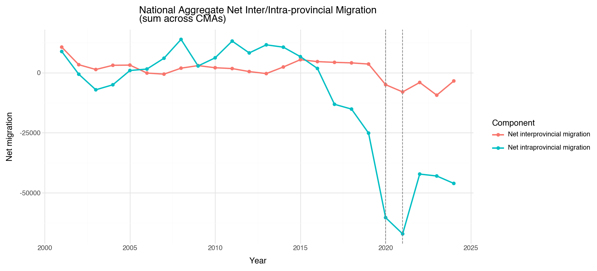
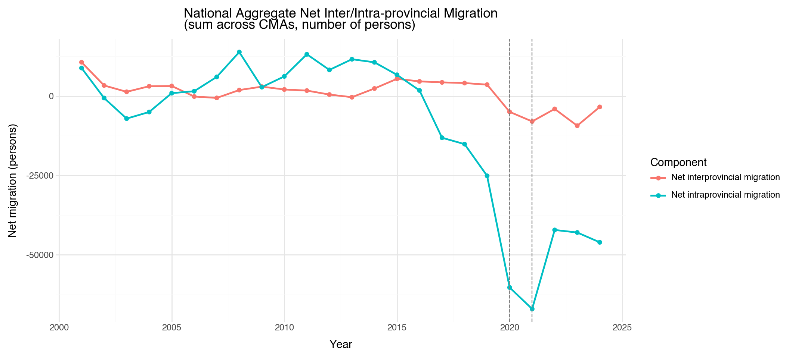
Unique CMAs: 43
Number of years: 24
Total rows after filtering: 20642b — df_rent (34100133, CMHC rents)
rent = df_rent.copy()
geo_col, ref_col, value_col = GEO_COL, REF_COL, "VALUE"
structure_col = "Type of structure"
rent[value_col] = pd.to_numeric(rent[value_col], errors="coerce")
rent["year"] = rent[ref_col].apply(extract_year).astype("Int64")
rent = rent[rent[structure_col] == "Apartment structures of three units and over"].copy()
rent = rent[rent[geo_col].astype(str).map(normalize_geo_key).isin(CMA_GEO_KEYS)].copy()
rent, rent_end_year = filter_to_analysis_window(rent, "year")
rent = rent.dropna(subset=[value_col, "year"])
rent_ts = rent.groupby("year", as_index=False)[value_col].median().sort_values("year")
g_rent_ts = (
p9.ggplot(rent_ts, p9.aes(x="year", y=value_col))
+ p9.geom_line(color="#1f77b4", size=1.0)
+ p9.geom_point(color="#1f77b4", size=1.7)
+ p9.labs(title="Median Rent Across CMAs (per year)", x="Year", y="Rent (median across CMAs)")
+ p9.theme_minimal()
)
p9.ggsave(g_rent_ts, filename=str(FIG_DIR / "2b_rent_median_timeseries.png"), width=11, height=4.8, units="in", dpi=180, verbose=False)
display(g_rent_ts)
g_rent_dist = (
p9.ggplot(rent, p9.aes(x=value_col))
+ p9.geom_histogram(bins=40, fill="#2ca02c", color="white", alpha=0.85)
+ p9.labs(title="Distribution of Rent Values Across CMA-years", x="Rent value", y="Count")
+ p9.theme_minimal()
)
p9.ggsave(g_rent_dist, filename=str(FIG_DIR / "2b_rent_distribution.png"), width=10, height=4.4, units="in", dpi=180, verbose=False)
display(g_rent_dist)
rent_pivot = rent.pivot_table(index=geo_col, columns="year", values=value_col, aggfunc="mean").sort_index()
window_end = int(rent_end_year) if rent_end_year is not None else ANALYSIS_YEAR_END_CAP
window_years = list(range(ANALYSIS_YEAR_START, window_end + 1))
rent_window = rent_pivot.reindex(columns=window_years)
complete_count = int(rent_window.notna().all(axis=1).sum()) if len(rent_window) else 0
print(f"CMAs with complete rent data ({ANALYSIS_YEAR_START}–{window_end}): {complete_count}")
rent_year_min = int(rent["year"].min()) if len(rent) else np.nan
rent_year_max = int(rent["year"].max()) if len(rent) else np.nan
missing_cells = int(rent_pivot.isna().sum().sum()) if len(rent_pivot) else 0
total_cells = int(rent_pivot.shape[0] * rent_pivot.shape[1]) if len(rent_pivot) else 0
availability_rows.append(
{
"Table": "df_rent (34100133)",
"Geographic level confirmed": "CMA rows",
"# units": int(rent_pivot.shape[0]),
"Year range": f"{rent_year_min}–{rent_year_max}",
"Key gaps noted": f"{missing_cells}/{total_cells} missing cells; complete {ANALYSIS_YEAR_START}–{window_end}: {complete_count}",
}
)
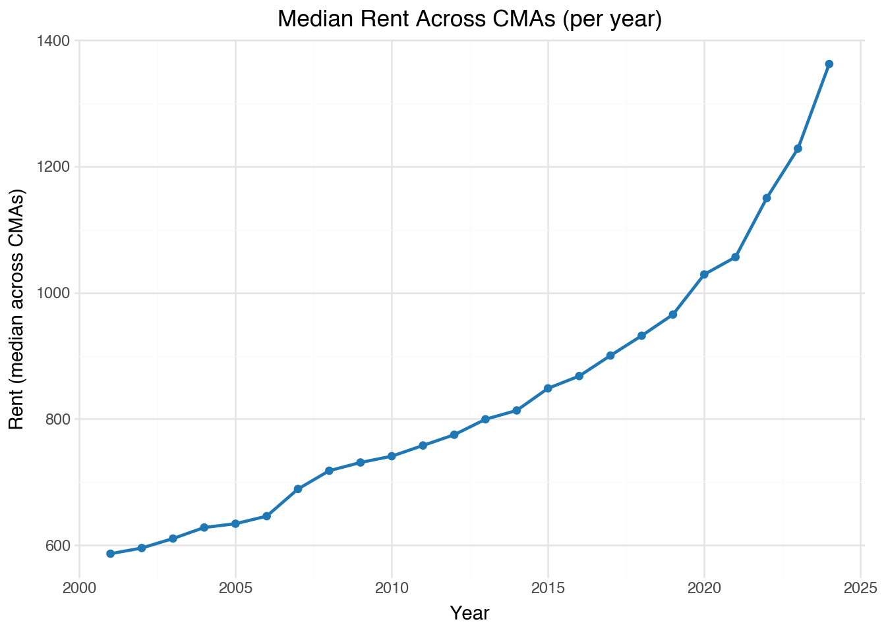
CMAs with complete rent data (2001–2024): 392c — df_lfs (14100020, Labour force characteristics)
lfs = df_lfs.copy()
geo_col, ref_col, value_col, metric_col = GEO_COL, REF_COL, "VALUE", "Labour force characteristics"
lfs[value_col] = pd.to_numeric(lfs[value_col], errors="coerce")
lfs["year"] = lfs[ref_col].apply(extract_year).astype("Int64")
lfs = lfs[
lfs[geo_col].isin(PROVINCES)
& (lfs["Educational attainment"] == "Total, all education levels")
& (lfs["Gender"] == "Total - Gender")
& (lfs["Age group"] == "15 years and over")
].copy()
lfs, _ = filter_to_analysis_window(lfs, "year")
lfs = lfs.dropna(subset=[value_col, "year"])
series_specs = [
("Unemployment rate", "Unemployment rate", "Provincial Unemployment Rates (Annual)", "2c_lfs_provincial_unemployment_timeseries.png"),
("Participation rate", "Participation rate", "Provincial Participation Rates (Annual)", "2c_lfs_provincial_participation_timeseries.png"),
]
series_frames = {}
for metric_label, y_label, title, fname in series_specs:
d = (
lfs[lfs[metric_col] == metric_label]
.groupby([geo_col, "year"], as_index=False)[value_col]
.mean()
.sort_values([geo_col, "year"])
)
series_frames[metric_label] = d
g = (
p9.ggplot(d, p9.aes(x="year", y=value_col, color=geo_col, group=geo_col))
+ p9.geom_line(size=0.9)
+ p9.geom_vline(xintercept=2020, linetype="dashed", color="gray")
+ p9.labs(title=title, x="Year", y=y_label, color="Province")
+ p9.theme_minimal()
+ p9.theme(figure_size=(12, 6))
)
p9.ggsave(g, filename=str(FIG_DIR / fname), width=12, height=6, units="in", dpi=180, verbose=False)
display(g)
lfs_unemp_ts = series_frames["Unemployment rate"]
lfs_partic_ts = series_frames["Participation rate"]
provinces_present = sorted(lfs_unemp_ts[geo_col].dropna().unique().tolist()) if len(lfs_unemp_ts) else []
years_present = sorted(lfs_unemp_ts["year"].dropna().astype(int).unique().tolist()) if len(lfs_unemp_ts) else []
print(provinces_present)
print(f"Years covered: {years_present[0]}–{years_present[-1]}" if years_present else "Years covered: none")
lfs_year_min = int(min(years_present)) if years_present else np.nan
lfs_year_max = int(max(years_present)) if years_present else np.nan
missing_unemp_cells = int(lfs_unemp_ts.pivot(index=geo_col, columns="year", values=value_col).isna().sum().sum()) if len(lfs_unemp_ts) else 0
availability_rows.append(
{
"Table": "df_lfs (14100020)",
"Geographic level confirmed": "Province/Territory",
"# units": int(len(provinces_present)),
"Year range": f"{lfs_year_min}–{lfs_year_max}",
"Key gaps noted": f"Missing unemployment province-year cells: {missing_unemp_cells}; participation rows: {len(lfs_partic_ts)}",
}
)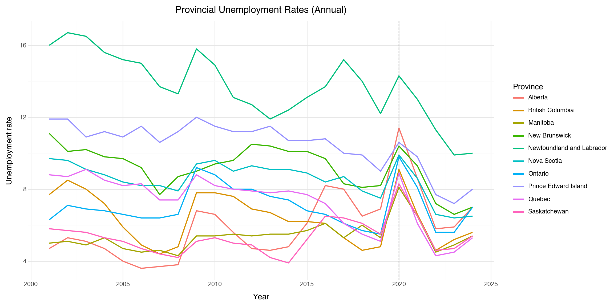

['Alberta', 'British Columbia', 'Manitoba', 'New Brunswick', 'Newfoundland and Labrador', 'Nova Scotia', 'Ontario', 'Prince Edward Island', 'Quebec', 'Saskatchewan']
Years covered: 2001–20242e — df_age (17100148, Population estimates by age and sex)
age = df_age.copy()
geo_col, ref_col, value_col = GEO_COL, REF_COL, "VALUE"
age_panel = build_age_feature_panel(age, geo_col=geo_col, ref_col=ref_col, value_col=value_col, year_min=ANALYSIS_YEAR_START, year_max=ANALYSIS_YEAR_END_CAP)
if len(age_panel) == 0:
raise ValueError("Age panel extraction returned no rows for df_age.")
age_mean = age_panel.groupby("year", as_index=False).agg(
mean_share_25_44=("share_25_44", "mean"),
mean_share_65plus=("share_65plus", "mean"),
)
for col, title, ylab, fname, color in [
("mean_share_25_44", "Mean Share of Population Aged 25–44 Across CMAs", "Mean share_25_44", "2e_age_mean_share_25_44_timeseries.png", "#d62728"),
("mean_share_65plus", "Mean Share of Population Aged 65+ Across CMAs", "Mean share_65plus", "2e_age_mean_share_65plus_timeseries.png", "#1f77b4"),
]:
g = (
p9.ggplot(age_mean, p9.aes(x="year", y=col))
+ p9.geom_line(color=color, size=1.0)
+ p9.geom_point(color=color, size=1.7)
+ p9.labs(title=title, x="Year", y=ylab)
+ p9.theme_minimal()
+ p9.theme(figure_size=(10.8, 4.8))
)
p9.ggsave(g, filename=str(FIG_DIR / fname), width=10.8, height=4.8, units="in", dpi=180, verbose=False)
display(g)
for col, title, xlabel, fname, color in [
("share_25_44", "Distribution of share_25_44 Across CMA-years", "share_25_44", "2e_age_share_25_44_distribution.png", "#9467bd"),
("share_65plus", "Distribution of share_65plus Across CMA-years", "share_65plus", "2e_age_share_65plus_distribution.png", "#2ca02c"),
]:
g = (
p9.ggplot(age_panel, p9.aes(x=col))
+ p9.geom_histogram(bins=40, fill=color, color="white", alpha=0.85)
+ p9.labs(title=title, x=xlabel, y="Count")
+ p9.theme_minimal()
+ p9.theme(figure_size=(10, 4.4))
)
p9.ggsave(g, filename=str(FIG_DIR / fname), width=10, height=4.4, units="in", dpi=180, verbose=False)
display(g)
print(age_panel.isnull().sum())
n_age_units = int(age_panel[geo_col].nunique()) if len(age_panel) else 0
age_year_min = int(age_panel["year"].min()) if len(age_panel) else np.nan
age_year_max = int(age_panel["year"].max()) if len(age_panel) else np.nan
print(f"Number of CMAs: {n_age_units}")
print(f"Year range: {age_year_min}–{age_year_max}")
availability_rows.append(
{
"Table": "df_age (17100148)",
"Geographic level confirmed": "CMA rows, both sexes",
"# units": n_age_units,
"Year range": f"{age_year_min}–{age_year_max}",
"Key gaps noted": (
f"Missing population rows: {int(age_panel['population'].isna().sum())}; "
f"missing share_25_44 rows: {int(age_panel['share_25_44'].isna().sum())}; "
f"missing share_65plus rows: {int(age_panel['share_65plus'].isna().sum())}"
),
}
)
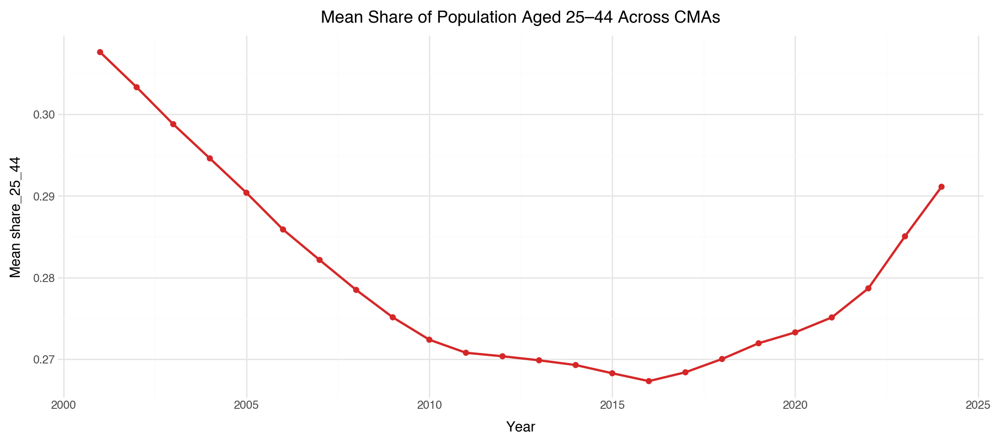

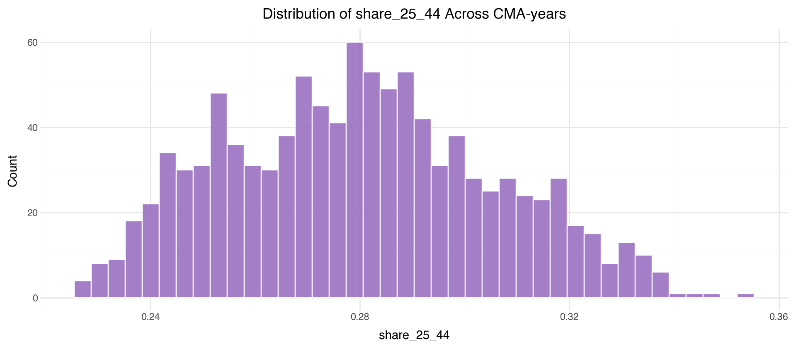
GEO 0
year 0
share_25_44 0
share_65plus 0
population 0
dtype: int64
Number of CMAs: 43
Year range: 2001–20242f — df_rd (27100273, R&D expenditures)
rd = df_rd.copy()
geo_col, ref_col, value_col = GEO_COL, REF_COL, "VALUE"
rd[value_col] = pd.to_numeric(rd[value_col], errors="coerce")
rd["year"] = rd[ref_col].apply(extract_year).astype("Int64")
rd = rd[
rd[geo_col].isin(PROVINCES)
& (rd["Funder"] == "Funder: total, all sectors")
& (rd["Performer"] == "Performer: total, all sectors")
& (rd["Science type"] == "Total sciences")
& (rd["Prices"] == "Current prices")
].copy()
rd, _ = filter_to_analysis_window(rd, "year")
rd = rd.dropna(subset=[value_col, "year"])
rd_ts = rd.groupby([geo_col, "year"], as_index=False)[value_col].mean().sort_values([geo_col, "year"])
g_rd = (
p9.ggplot(rd_ts, p9.aes(x="year", y=value_col, color=geo_col, group=geo_col))
+ p9.geom_line(size=0.9)
+ p9.labs(title="Provincial R&D Expenditures Over Time", x="Year", y="R&D expenditure", color="Province")
+ p9.theme_minimal()
+ p9.theme(figure_size=(12, 6))
)
p9.ggsave(g_rd, filename=str(FIG_DIR / "2f_rd_provincial_timeseries.png"), width=12, height=6, units="in", dpi=180, verbose=False)
display(g_rd)
rd_provinces = sorted(rd_ts[geo_col].dropna().unique().tolist())
rd_year_min = int(rd_ts["year"].min()) if len(rd_ts) else np.nan
rd_year_max = int(rd_ts["year"].max()) if len(rd_ts) else np.nan
has_cma_rows_anywhere = bool(df_rd[GEO_COL].astype(str).str.contains(r"\(CMA\)", case=False, regex=True, na=False).any())
print(rd_provinces)
print(f"Year range: {rd_year_min}–{rd_year_max}")
print(f"Any CMA-level rows detected in raw df_rd: {has_cma_rows_anywhere}")
availability_rows.append(
{
"Table": "df_rd (27100273)",
"Geographic level confirmed": "Province/Territory",
"# units": int(len(rd_provinces)),
"Year range": f"{rd_year_min}–{rd_year_max}",
"Key gaps noted": f"CMA rows in raw table: {has_cma_rows_anywhere}",
}
)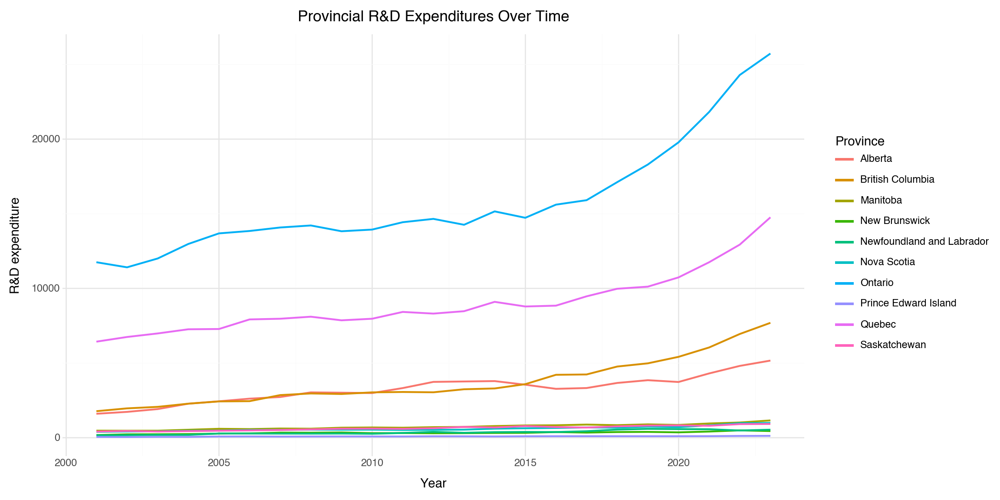
['Alberta', 'British Columbia', 'Manitoba', 'New Brunswick', 'Newfoundland and Labrador', 'Nova Scotia', 'Ontario', 'Prince Edward Island', 'Quebec', 'Saskatchewan']
Year range: 2001–2023
Any CMA-level rows detected in raw df_rd: FalseConsolidated data availability summary
availability_df = pd.DataFrame(
availability_rows,
columns=["Table","Geographic level confirmed","# units", "Year range", "Key gaps noted"],
)
display(availability_df)| Table | Geographic level confirmed | # units | Year range | Key gaps noted | |
|---|---|---|---|---|---|
| 0 | df_pop (17100149) | CMA rows (aggregates removed) | 43 | 2001–2024 | Missing VALUE rows after filters: 0 |
| 1 | df_rent (34100133) | CMA rows | 40 | 2001–2024 | 1/960 missing cells; complete 2001–2024: 39 |
| 2 | df_lfs (14100020) | Province/Territory | 10 | 2001–2024 | Missing unemployment province-year cells: 0; p... |
| 3 | df_age (17100148) | CMA rows, both sexes | 43 | 2001–2024 | Missing population rows: 0; missing share_25_4... |
| 4 | df_rd (27100273) | Province/Territory | 10 | 2001–2023 | CMA rows in raw table: False |
Null count by dataset
null_count_df = pd.DataFrame(
[
{"df": "df_pop", "total_null_cells": int(df_pop.isnull().sum().sum())},
{"df": "df_rent", "total_null_cells": int(df_rent.isnull().sum().sum())},
{"df": "df_lfs", "total_null_cells": int(df_lfs.isnull().sum().sum())},
{"df": "df_age", "total_null_cells": int(df_age.isnull().sum().sum())},
{"df": "df_rd", "total_null_cells": int(df_rd.isnull().sum().sum())},
]
)
display(null_count_df)| df | total_null_cells | |
|---|---|---|
| 0 | df_pop | 0 |
| 1 | df_rent | 4958 |
| 2 | df_lfs | 101207 |
| 3 | df_age | 0 |
| 4 | df_rd | 46566 |
Step 3 — Merge and Panel Construction
CMA identification rule: geo_type is derived from the original geography label (geo_name): labels containing "(CMA)" are tagged as CMA, and all other rows are treated as non-analysis rows. The normalised join key (geo_key) is not used for type detection because normalisation removes the StatCan geography-type suffix.
# Step 3 uses the raw pulled tables (df_*) and rebuilds merge-ready slices.
pop = df_pop.copy()
rent = df_rent.copy()
lfs = df_lfs.copy()
age = df_age.copy()
rd = df_rd.copy()
pop_geo_col = rent_geo_col = age_geo_col = lfs_geo_col = rd_geo_col = GEO_COL
pop_ref_col = rent_ref_col = age_ref_col = lfs_ref_col = rd_ref_col = REF_COL
for df_obj, ref_col in [
(pop, pop_ref_col),
(rent, rent_ref_col),
(age, age_ref_col),
(lfs, lfs_ref_col),
(rd, rd_ref_col),
]:
df_obj["VALUE"] = pd.to_numeric(df_obj["VALUE"], errors="coerce")
df_obj["year"] = df_obj[ref_col].apply(extract_year).astype("Int64")
# 3a - GEO normalisation (exact function from instructions)
def normalise_geo(s: str) -> str:
s = str(s).strip()
s = re.sub(r"\s*\(C[MA]{1,2}\),?", ",", s) # strip raw geography-type suffixes
s = re.sub(r"\s*-\s*", "-", s) # " - " → "-"
s = re.sub(r",\s*,", ",", s) # clean up double commas
s = re.sub(r"\s+", " ", s).strip().rstrip(",").strip()
return s.lower()
for df_obj, geo_col in [(pop, pop_geo_col), (age, age_geo_col), (rent, rent_geo_col)]:
df_obj["geo_key"] = df_obj[geo_col].apply(normalise_geo)
JUNK_GEO_PATTERN = "area outside|all census|national capital region"
pop_cma = pop[pop["geo_key"].isin(CMA_GEO_KEYS)].copy()
age_cma = age[age["geo_key"].isin(CMA_GEO_KEYS)].copy()
rent_cma = rent[rent["geo_key"].isin(CMA_GEO_KEYS)].copy()
for df_obj in [pop_cma, age_cma, rent_cma]:
df_obj.drop(
index=df_obj[df_obj["geo_key"].str.contains(JUNK_GEO_PATTERN, case=False, regex=True, na=False)].index,
inplace=True,
)
# 3b - Province lookup (derived from geo_key tail; Ottawa-Gatineau -> Ontario)
province_canon = {p.lower(): p for p in PROVINCES}
def infer_province_from_geo_key(geo_key: str) -> str | float:
geo_key = str(geo_key).strip().lower()
if "ottawa-gatineau" in geo_key:
return "Ontario"
if "," not in geo_key:
return np.nan
tail = geo_key.rsplit(",", 1)[1].split("/")[0].strip().replace("new-brunswick", "new brunswick")
tail = re.sub(r"\spart.*$", "", tail).strip()
return province_canon.get(tail, tail.title().replace(" And ", " and "))
all_geo_keys = sorted(
set(pop_cma["geo_key"].dropna().unique())
| set(rent_cma["geo_key"].dropna().unique())
| set(age_cma["geo_key"].dropna().unique())
)
province_lookup = {k: infer_province_from_geo_key(k) for k in all_geo_keys}
# 3c.1 - Spine from df_pop outcomes
pop_component_col = "Components of population growth"
pop_gender_col = "Gender"
pop_age_col = "Age group"
pop_total = pop_cma[pop_cma[pop_gender_col].eq("Total - gender") & pop_cma[pop_age_col].eq("All ages")].copy()
pop_total, _ = filter_to_analysis_window(pop_total, "year")
pop_total = pop_total.dropna(subset=["geo_key", "year", "VALUE"])
pop_for_spine = pop_total.copy()
# Task 1 - drop split geographies before building the spine.
drop_split_mask = pop_for_spine["geo_key"].str.contains(r" part,| part$", regex=True, na=False) & ~pop_for_spine["geo_key"].eq("ottawa-gatineau, ontario part, ontario")
print(f"Split-geography rows removed before spine build: {int(drop_split_mask.sum()):,}")
pop_for_spine = pop_for_spine.loc[~drop_split_mask].copy()
target_comp_map = {
"net interprovincial migration": "net_interprovincial",
"net intraprovincial migration": "net_intraprovincial",
}
pop_for_spine["component_key"] = pop_for_spine[pop_component_col].str.strip().str.lower().map(target_comp_map)
pop_for_spine = pop_for_spine.dropna(subset=["component_key"])
spine_long = (
pop_for_spine.groupby(["geo_key", "year", "component_key"], as_index=False)["VALUE"]
.sum()
.sort_values(["geo_key", "year", "component_key"])
)
spine = (
spine_long.pivot(index=["geo_key", "year"], columns="component_key", values="VALUE")
.reset_index()
.rename_axis(None, axis=1)
)
for col in ["net_interprovincial", "net_intraprovincial"]:
if col not in spine.columns:
spine[col] = np.nan
geo_name_map = (
pop_for_spine.groupby("geo_key")[pop_geo_col]
.agg(lambda s: s.mode().iloc[0] if not s.mode().empty else s.iloc[0])
.to_dict()
)
spine["geo_name"] = spine["geo_key"].map(geo_name_map)
spine["geo_type"] = np.where(
spine["geo_name"].astype(str).str.contains(r"\(CMA\)", case=False, regex=True, na=False),
"CMA",
"Unknown",
)
spine = spine[spine["geo_type"] == "CMA"].copy()
print(f"Spine after CMA filter: {spine['geo_key'].nunique()} CMAs")
spine["province"] = spine["geo_key"].map(province_lookup)
spine = spine.sort_values(["geo_key", "year"]).reset_index(drop=True)
print(f"\nInitial spine shape: {spine.shape}")
print(f"Initial units: {spine['geo_key'].nunique()}, years: {int(spine['year'].min())}-{int(spine['year'].max())}")
# 3c.2 - df_rent -> avg_rent
rent_work = rent_cma[
rent_cma[rent_ref_col].astype(str).str.match(r"^(19|20)\d{2}\b", na=False)
& rent_cma["Type of structure"].astype(str).str.contains("apartment structures of three units and over", case=False, na=False)
].copy()
rent_work, _ = filter_to_analysis_window(rent_work, "year")
rent_work = rent_work.dropna(subset=["geo_key", "year", "VALUE"])
rent_panel = (
rent_work.groupby(["geo_key", "year"], as_index=False)["VALUE"]
.mean()
.rename(columns={"VALUE": "avg_rent"})
)
# 3c.3 - df_age -> share_25_44, share_65plus, population
age_panel = build_age_feature_panel(
age_cma,
geo_col=age_geo_col,
ref_col=age_ref_col,
value_col="VALUE",
year_min=ANALYSIS_YEAR_START,
year_max=ANALYSIS_YEAR_END_CAP,
)
age_panel = age_panel.rename(columns={age_geo_col: "geo_key"})
age_panel["geo_key"] = age_panel["geo_key"].apply(normalise_geo)
print(f"Age merge panel rows: {len(age_panel):,}; units: {age_panel['geo_key'].nunique() if len(age_panel) else 0}")
# 3c.6 - df_pop aggregates -> natural_increase_rate, intl_inmigration
pop_agg_map = {
"births": "births",
"deaths": "deaths",
"immigrants": "intl_inmigration",
}
pop_agg = pop_total.assign(metric=pop_total[pop_component_col].str.strip().str.lower().map(pop_agg_map)).dropna(subset=["metric"])
pop_agg_panel = (
pop_agg.groupby(["geo_key", "year", "metric"], as_index=False)["VALUE"]
.sum()
.pivot(index=["geo_key", "year"], columns="metric", values="VALUE")
.reset_index()
.rename_axis(None, axis=1)
)
for col in ["births", "deaths", "intl_inmigration"]:
if col not in pop_agg_panel.columns:
pop_agg_panel[col] = np.nan
pop_agg_panel["natural_increase"] = pop_agg_panel["births"] - pop_agg_panel["deaths"]
pop_agg_panel = pop_agg_panel[["geo_key", "year", "natural_increase", "intl_inmigration"]]
# 3c.7 - df_lfs province-year
lfs_edu_col = "Educational attainment"
lfs_metric_col = "Labour force characteristics"
lfs_work = lfs[
lfs[lfs_ref_col].astype(str).str.match(r"^(19|20)\d{2}\b", na=False)
& lfs[lfs_geo_col].isin(PROVINCES)
& lfs[lfs_edu_col].eq("Total, all education levels")
& lfs["Gender"].eq("Total - Gender")
& lfs["Age group"].eq("15 years and over")
].copy()
lfs_work, _ = filter_to_analysis_window(lfs_work, "year")
lfs_work = lfs_work.dropna(subset=[lfs_geo_col, "year", "VALUE"])
lfs_panel = (
lfs_work[lfs_work[lfs_metric_col].isin(["Unemployment rate", "Participation rate"])]
.pivot_table(index=[lfs_geo_col, "year"], columns=lfs_metric_col, values="VALUE", aggfunc="mean")
.reset_index()
.rename_axis(None, axis=1)
.rename(columns={lfs_geo_col: "province", "Unemployment rate": "unemployment_rate", "Participation rate": "participation_rate"})
)
for col in ["unemployment_rate", "participation_rate"]:
if col not in lfs_panel.columns:
lfs_panel[col] = np.nan
# 3c.8 - df_rd province-year
rd_work = rd[
rd[rd_ref_col].astype(str).str.match(r"^(19|20)\d{2}\b", na=False)
& rd[rd_geo_col].isin(PROVINCES)
& rd["Funder"].eq("Funder: total, all sectors")
& rd["Performer"].eq("Performer: total, all sectors")
& rd["Science type"].eq("Total sciences")
& rd["Prices"].eq("Current prices")
].copy()
rd_work, _ = filter_to_analysis_window(rd_work, "year")
rd_work = rd_work.dropna(subset=[rd_geo_col, "year", "VALUE"])
rd_panel = (
rd_work.groupby([rd_geo_col, "year"], as_index=False)["VALUE"]
.mean()
.rename(columns={rd_geo_col: "province", "VALUE": "rd_provincial"})
)
def left_join_with_diagnostics(
left_df: pd.DataFrame,
right_df: pd.DataFrame,
on_cols: list[str],
new_cols: list[str],
step_label: str,
) -> pd.DataFrame:
merged = left_df.merge(right_df[on_cols + new_cols], on=on_cols, how="left")
print(f"\n{step_label}: {len(left_df):,} -> {len(merged):,}; new NaN {merged[new_cols].isna().sum().to_dict()}")
return merged
panel = spine.copy()
# Join 1: rent
panel = left_join_with_diagnostics(
panel,
rent_panel,
on_cols=["geo_key", "year"],
new_cols=["avg_rent"],
step_label="Join 1/5: + df_rent (avg_rent)",
)
# Join 2: age shares + population
panel = left_join_with_diagnostics(
panel,
age_panel,
on_cols=["geo_key", "year"],
new_cols=["share_25_44", "share_65plus", "population"],
step_label="Join 2/5: + df_age (share_25_44, share_65plus, population)",
)
# Join 3: pop aggregates
before_rows = len(panel)
panel = panel.merge(pop_agg_panel, on=["geo_key", "year"], how="left")
panel["natural_increase_rate"] = np.where(
panel["population"] > 0,
(panel["natural_increase"] / panel["population"]) * 1000.0,
np.nan,
)
after_rows = len(panel)
nan_cols_step5 = panel[["natural_increase_rate", "intl_inmigration"]].isna().sum().to_dict()
print("\nJoin 3/5: + df_pop aggregates (natural_increase_rate, intl_inmigration)")
print(f"Rows before: {before_rows:,}; rows after: {after_rows:,}")
print(f"New NaN cells in added columns: {int(sum(nan_cols_step5.values())):,} -> {nan_cols_step5}")
panel = panel.drop(columns=["natural_increase"], errors="ignore")
# Join 4: lfs on province-year
panel = left_join_with_diagnostics(
panel,
lfs_panel,
on_cols=["province", "year"],
new_cols=["unemployment_rate", "participation_rate"],
step_label="Join 4/5: + df_lfs (unemployment_rate, participation_rate) on province-year",
)
# Join 5: rd on province-year
panel = left_join_with_diagnostics(
panel,
rd_panel,
on_cols=["province", "year"],
new_cols=["rd_provincial"],
step_label="Join 5/5: + df_rd (rd_provincial) on province-year",
)
# 3d - Constructed features
panel["rent_deviation"] = panel["avg_rent"] - panel.groupby(["province", "year"])["avg_rent"].transform("median")
# 3e - Validation and missingness report
rows, cols = panel.shape
year_min = int(panel["year"].min()) if len(panel) else np.nan
year_max = int(panel["year"].max()) if len(panel) else np.nan
n_units = int(panel["geo_key"].nunique()) if len(panel) else 0
print("\nPanel shape (rows x columns):", f"{rows:,} x {cols:,}")
print(f"Year range: {year_min}-{year_max}")
print(f"Unique CMA units: {n_units}")
feature_cols = [ "net_interprovincial", "net_intraprovincial", "avg_rent", "share_25_44", "share_65plus", "population", "natural_increase_rate", "intl_inmigration", "unemployment_rate", "participation_rate", "rd_provincial", "rent_deviation",]
feature_summary_df = (
panel[feature_cols]
.apply(pd.to_numeric, errors="coerce")
.agg(["count", "min", "max"])
.T.reset_index()
.rename(columns={"index": "feature", "count": "non_null"})
)
feature_summary_df["pct_missing"] = (panel[feature_cols].isna().mean().values * 100).round(2)
feature_summary_df = feature_summary_df[["feature", "non_null", "pct_missing", "min", "max"]]
display(feature_summary_df)
print(f"STEP 3 MERGE COMPLETE — panel shape: {rows} × {cols}")Split-geography rows removed before spine build: 251
Spine after CMA filter: 42 CMAs
Initial spine shape: (1008, 7)
Initial units: 42, years: 2001-2024
Age merge panel rows: 1,032; units: 43
Join 1/5: + df_rent (avg_rent): 1,008 -> 1,008; new NaN {'avg_rent': 49}
Join 2/5: + df_age (share_25_44, share_65plus, population): 1,008 -> 1,008; new NaN {'share_25_44': 0, 'share_65plus': 0, 'population': 0}
Join 3/5: + df_pop aggregates (natural_increase_rate, intl_inmigration)
Rows before: 1,008; rows after: 1,008
New NaN cells in added columns: 0 -> {'natural_increase_rate': 0, 'intl_inmigration': 0}
Join 4/5: + df_lfs (unemployment_rate, participation_rate) on province-year: 1,008 -> 1,008; new NaN {'unemployment_rate': 0, 'participation_rate': 0}
Join 5/5: + df_rd (rd_provincial) on province-year: 1,008 -> 1,008; new NaN {'rd_provincial': 42}
Panel shape (rows x columns): 1,008 x 17
Year range: 2001-2024
Unique CMA units: 42| feature | non_null | pct_missing | min | max | |
|---|---|---|---|---|---|
| 0 | net_interprovincial | 1008.0 | 0.00 | -25740.000000 | 2.062800e+04 |
| 1 | net_intraprovincial | 1008.0 | 0.00 | -100570.000000 | 9.631000e+03 |
| 2 | avg_rent | 959.0 | 4.86 | 381.625000 | 2.125250e+03 |
| 3 | share_25_44 | 1008.0 | 0.00 | 0.226669 | 3.532036e-01 |
| 4 | share_65plus | 1008.0 | 0.00 | 0.088416 | 2.576022e-01 |
| 5 | population | 1008.0 | 0.00 | 70285.000000 | 7.109866e+06 |
| 6 | natural_increase_rate | 1008.0 | 0.00 | -5.394972 | 9.824975e+00 |
| 7 | intl_inmigration | 1008.0 | 0.00 | 45.000000 | 1.596750e+05 |
| 8 | unemployment_rate | 1008.0 | 0.00 | 3.600000 | 1.670000e+01 |
| 9 | participation_rate | 1008.0 | 0.00 | 56.400000 | 7.480000e+01 |
| 10 | rd_provincial | 966.0 | 4.17 | 142.000000 | 2.570500e+04 |
| 11 | rent_deviation | 959.0 | 4.86 | -329.750000 | 5.562500e+02 |
STEP 3 MERGE COMPLETE — panel shape: 1008 × 17Step 3 — Post-Merge Diagnostics, Filtering, and Split
TRAIN_END_YEAR = 2018
# Task 2 - rerun diagnose_nan after the spine fix.
avg_rent_source = rent_panel.copy()
age_feature_source = age_panel.copy()
def diagnose_nan(panel, col, source_df, source_geo_col, year_col='year'):
"""Attribute NaN cells to: (A) suppressed value, (B) geo mismatch, (C) year range gap."""
nan_rows = panel.loc[panel[col].isna(), ["geo_key", year_col]].copy()
if nan_rows.empty:
return {"col": col, "total_nan": 0, "cause_a": 0, "cause_b": 0, "cause_c": 0, "cause_b_keys": []}
source_pairs = (
source_df.assign(geo_key=source_df[source_geo_col].map(normalise_geo))[["geo_key", year_col]]
.dropna()
.drop_duplicates()
.assign(in_source_pair=True)
)
source_keys = set(source_pairs["geo_key"])
nan_rows = nan_rows.merge(source_pairs, on=["geo_key", year_col], how="left")
cause_b_mask = ~nan_rows["geo_key"].isin(source_keys)
cause_c_mask = ~cause_b_mask & nan_rows["in_source_pair"].isna()
cause_b_keys = sorted(nan_rows.loc[cause_b_mask, "geo_key"].dropna().astype(str).unique().tolist())
return {
"col": col,
"total_nan": int(len(nan_rows)),
"cause_a": int((~cause_b_mask & ~cause_c_mask).sum()),
"cause_b": int(cause_b_mask.sum()),
"cause_c": int(cause_c_mask.sum()),
"cause_b_keys": cause_b_keys,
}
print("\nTask 2 — diagnose_nan after spine fix")
diag_specs = {
"avg_rent": avg_rent_source,
"share_25_44": age_feature_source,
"population": age_feature_source,
}
diag_results = []
for col, source_df in diag_specs.items():
res = diagnose_nan(panel, col, source_df, "geo_key")
diag_results.append(res)
if res["cause_b"] > 0:
print(f"Cause B keys for {col} (full list):")
print(res["cause_b_keys"])
diag_results_df = pd.DataFrame(diag_results)
display(diag_results_df[["col", "total_nan", "cause_a", "cause_b", "cause_c"]])
print("\nTask 2a1 — manual CMA drop for persistent rent Cause-B mismatches")
MANUAL_DROP_CMA_KEYS = [
"belleville-quinte west, ontario",
"ottawa-gatineau, ontario part, ontario",
]
manual_drop_cma_names = sorted(panel.loc[panel["geo_key"].isin(MANUAL_DROP_CMA_KEYS), "geo_name"].dropna().astype(str).unique().tolist())
panel = panel[~panel["geo_key"].isin(MANUAL_DROP_CMA_KEYS)].copy()
print(f"Dropped manual rent-mismatch CMAs: {manual_drop_cma_names}")
print("\nTask 2a2 — targeted imputation for Chilliwack 2006 avg_rent")
chilli_key = "chilliwack, british columbia"
chilli_year = 2006
chilli_mask = (panel["geo_key"] == chilli_key) & (panel["year"] == chilli_year)
if chilli_mask.any() and panel.loc[chilli_mask, "avg_rent"].isna().any():
prev_mask = (panel["geo_key"] == chilli_key) & (panel["year"] == (chilli_year - 1))
next_mask = (panel["geo_key"] == chilli_key) & (panel["year"] == (chilli_year + 1))
prev_val = panel.loc[prev_mask, "avg_rent"].dropna()
next_val = panel.loc[next_mask, "avg_rent"].dropna()
if len(prev_val) and len(next_val):
imputed_val = float((prev_val.iloc[0] + next_val.iloc[0]) / 2.0)
panel.loc[chilli_mask, "avg_rent"] = imputed_val
print(f"Imputed {chilli_key} {chilli_year} avg_rent: {imputed_val:.3f}")
else:
print(f"Skipped Chilliwack imputation: prev={len(prev_val) > 0}, next={len(next_val) > 0}")
else:
print("No Chilliwack 2006 avg_rent NaN found to impute.")
# Keep derived metric consistent after any rent updates.
panel["rent_deviation"] = panel["avg_rent"] - panel.groupby(["province", "year"])["avg_rent"].transform("median")
remaining_train_rent_nan = int(panel.loc[panel["year"] <= TRAIN_END_YEAR, "avg_rent"].isna().sum())
print(f"Remaining train-set avg_rent NaN after manual fixes: {remaining_train_rent_nan}")
print("\nTask 2b — apply 30% missingness threshold")
identifier_cols = ["geo_key", "geo_name", "geo_type", "year", "province"]
outcome_cols = ["net_interprovincial", "net_intraprovincial"]
derived_cols = ["rent_deviation", "log_population"]
base_source_cols = [
c for c in panel.columns
if c not in set(identifier_cols + outcome_cols + derived_cols)
]
unit_missing_fraction = panel.groupby("geo_key")[base_source_cols].apply(lambda x: x.isna().mean().mean())
dropped_keys = sorted(unit_missing_fraction[unit_missing_fraction > 0.30].index.tolist())
units_before = int(panel["geo_key"].nunique())
unit_geo_name = panel.drop_duplicates("geo_key").set_index("geo_key")["geo_name"].to_dict()
dropped_info = pd.DataFrame({"geo_key": dropped_keys})
if len(dropped_info):
dropped_info["geo_name"] = dropped_info["geo_key"].map(unit_geo_name).fillna(dropped_info["geo_key"])
else:
dropped_info["geo_name"] = pd.Series(dtype="string")
dropped_cma_names = sorted(dropped_info["geo_name"].dropna().astype(str).unique().tolist()) if len(dropped_info) else []
panel = panel[~panel["geo_key"].isin(dropped_keys)].copy()
units_after = int(panel["geo_key"].nunique())
print(f"Total units before drop: {units_before}")
print(f"Total units after drop: {units_after}")
print(f"Dropped CMA units: {len(dropped_keys)}")
if dropped_cma_names:
print("Dropped CMAs (manual review required):")
print(dropped_cma_names)
else:
print("Dropped CMAs (manual review required): none")
# Task 3 - add log transform while retaining raw population.
panel["log_population"] = np.where(panel["population"] > 0, np.log(panel["population"]), np.nan)
print("\nTask 3 — added log_population while retaining population")
# Save filtered panel.
panel_out = PROJECT_ROOT / "data" / "processed" / "panel_cma.csv"
panel.to_csv(panel_out, index=False)
print(f"Saved filtered panel to: {panel_out}")
# Task 4 - train/test split + overwrite processed outputs.
train = panel[panel['year'] <= TRAIN_END_YEAR].copy()
test = panel[panel['year'] >= (TRAIN_END_YEAR + 1)].copy()
print("\nTask 4 — train-set NULL counts (year <= 2018)")
train_null_counts = train.isna().sum().sort_values(ascending=False)
print(train_null_counts.to_string())
print(f"Remaining train-set NaN cells: {int(train.isna().sum().sum()):,}")
print("\nTask 4 — train/test split and save")
print(f"train shape: {train.shape}")
print(f"test shape: {test.shape}")
train_units = set(train["geo_key"].dropna().astype(str))
test_units = set(test["geo_key"].dropna().astype(str))
unit_sets_identical = train_units == test_units
print(f"Unique unit sets identical across train/test: {unit_sets_identical}")
if not unit_sets_identical:
print("Units in train not in test:")
print(sorted(train_units - test_units))
print("Units in test not in train:")
print(sorted(test_units - train_units))
train_out = PROJECT_ROOT / "data" / "processed" / "train.csv"
test_out = PROJECT_ROOT / "data" / "processed" / "test.csv"
train.to_csv(train_out, index=False)
test.to_csv(test_out, index=False)
Task 2 — diagnose_nan after spine fix
Cause B keys for avg_rent (full list):
['belleville-quinte west, ontario', 'ottawa-gatineau, ontario part, ontario']| col | total_nan | cause_a | cause_b | cause_c | |
|---|---|---|---|---|---|
| 0 | avg_rent | 49 | 0 | 48 | 1 |
| 1 | share_25_44 | 0 | 0 | 0 | 0 |
| 2 | population | 0 | 0 | 0 | 0 |
Task 2a1 — manual CMA drop for persistent rent Cause-B mismatches
Dropped manual rent-mismatch CMAs: ['Belleville - Quinte West (CMA), Ontario', 'Ottawa - Gatineau (CMA), Ontario part, Ontario']
Task 2a2 — targeted imputation for Chilliwack 2006 avg_rent
Imputed chilliwack, british columbia 2006 avg_rent: 603.812
Remaining train-set avg_rent NaN after manual fixes: 0
Task 2b — apply 30% missingness threshold
Total units before drop: 40
Total units after drop: 40
Dropped CMA units: 0
Dropped CMAs (manual review required): none
Task 3 — added log_population while retaining population
Saved filtered panel to: /Users/xia/JSC370/JSC370_2026/project/canada_migration/data/processed/panel_cma.csv
Task 4 — train-set NULL counts (year <= 2018)
geo_key 0
year 0
rent_deviation 0
rd_provincial 0
participation_rate 0
unemployment_rate 0
natural_increase_rate 0
intl_inmigration 0
population 0
share_65plus 0
share_25_44 0
avg_rent 0
province 0
geo_type 0
geo_name 0
net_intraprovincial 0
net_interprovincial 0
log_population 0
Remaining train-set NaN cells: 0
Task 4 — train/test split and save
train shape: (720, 18)
test shape: (240, 18)
Unique unit sets identical across train/test: TrueStep 4 — Post-Merge EDA (Train Set: 2001–2018)
# Step 4 EDA is run on the train set only to avoid look-ahead into holdout years.
if "panel" not in globals():
panel = pd.read_csv(PROJECT_ROOT / "data" / "processed" / "panel_cma.csv")
if "train" not in globals():
train = pd.read_csv(PROJECT_ROOT / "data" / "processed" / "train.csv")
if "test" not in globals():
test = pd.read_csv(PROJECT_ROOT / "data" / "processed" / "test.csv")
eda = train.loc[train["geo_type"].eq("CMA")].copy()
test_eda = test.loc[test["geo_type"].eq("CMA")].copy()
print(f"EDA year range: {int(eda['year'].min())}-{int(eda['year'].max())}")
tables_dir = PROJECT_ROOT / "outputs" / "tables"
os.makedirs(tables_dir, exist_ok=True)
# 4a) Summary statistics table (train and test shown separately).
summary_cols = ["net_interprovincial", "net_intraprovincial", "avg_rent", "rent_deviation", "unemployment_rate", "participation_rate", "share_25_44", "share_65plus", "population", "log_population", "intl_inmigration", "natural_increase_rate", "rd_provincial"]
def summarize_frame(df: pd.DataFrame) -> pd.DataFrame:
out = (
df[summary_cols]
.agg(["mean", "std", "min", "max"])
.T.reset_index()
.rename(columns={"index": "feature", "std": "sd"})
)
out["pct_missing"] = (df[summary_cols].isna().mean().values * 100).round(2)
return out[["feature", "mean", "sd", "min", "max", "pct_missing"]]
summary_train_df = summarize_frame(eda)
summary_test_df = summarize_frame(test_eda)
print("4a — Train summary stats")
display(summary_train_df)
print("4a — Test summary stats")
display(summary_test_df)
# 4b) Spearman correlation heatmap.
corr_cols = ["net_interprovincial", "net_intraprovincial", "avg_rent", "rent_deviation", "unemployment_rate", "participation_rate", "share_25_44", "share_65plus", "log_population", "intl_inmigration", "natural_increase_rate", "rd_provincial"]
metric_labels = {
"net_interprovincial": "Net interprovincial migration",
"net_intraprovincial": "Net intraprovincial migration",
}
corr_long = (
eda[corr_cols]
.corr(method="spearman")
.stack()
.reset_index(name="corr")
.rename(columns={"level_0": "x", "level_1": "y"})
.assign(
x=lambda d: pd.Categorical(d["x"], categories=corr_cols, ordered=True),
y=lambda d: pd.Categorical(d["y"], categories=list(reversed(corr_cols)), ordered=True),
label=lambda d: d["corr"].round(2).map("{:.2f}".format),
)
)
g_corr = (
p9.ggplot(corr_long, p9.aes(x="x", y="y", fill="corr"))
+ p9.geom_tile()
+ p9.geom_text(p9.aes(label="label"), size=6)
+ p9.scale_fill_gradient2(low="#3B4CC0", mid="white", high="#B40426", midpoint=0, limits=(-1, 1))
+ p9.labs(title="Step 4: Spearman Correlation Heatmap (Train 2001–2018)", x="", y="", fill="rho")
+ p9.theme_minimal()
+ p9.theme(figure_size=(11, 9), axis_text_x=p9.element_text(rotation=60, ha="right"))
)
p9.ggsave(g_corr, filename=str(FIG_DIR / "4b_feature_correlation_heatmap_train.png"), width=11, height=9, units="in", dpi=180, verbose=False)
display(g_corr)
# Size categories from pre-COVID population tertiles.
pop_ref = eda.loc[eda["year"].between(2016, 2018, inclusive="both")].groupby("geo_key")["population"].median().dropna()
if pop_ref.empty:
pop_ref = eda.groupby("geo_key")["population"].median().dropna()
q1, q2 = pop_ref.quantile([1 / 3, 2 / 3]).astype(float)
size_map = {k: ("Small" if v <= q1 else "Medium" if v <= q2 else "Large") for k, v in pop_ref.items()}
eda["cma_size"] = eda["geo_key"].map(size_map).fillna("Unknown")
size_order = ["Small", "Medium", "Large", "Unknown"]
size_colors = {"Small": "#4E79A7", "Medium": "#59A14F", "Large": "#E15759", "Unknown": "#9C755F"}
print(f"CMA size cutoffs: Small <= {q1:,.0f}; Medium <= {q2:,.0f}; Large > {q2:,.0f}")
# 4c) Net migration time-series by size category (faceted).
ts_long = (
eda.groupby(["year", "cma_size"], as_index=False)[["net_interprovincial", "net_intraprovincial"]]
.mean()
.melt(id_vars=["year", "cma_size"], var_name="metric", value_name="value")
.assign(metric=lambda d: d["metric"].map(metric_labels))
)
g_4c = (
p9.ggplot(ts_long, p9.aes(x="year", y="value", color="cma_size", group="cma_size"))
+ p9.geom_line(size=1.0)
+ p9.geom_hline(yintercept=0, linetype="dashed", color="gray")
+ p9.facet_wrap("~metric", ncol=2, scales="free_y")
+ p9.scale_color_manual(values=size_colors, limits=size_order)
+ p9.labs(title="Step 4: Net Migration by CMA Size Category (Train 2001–2018)", x="Year", y="Mean migration", color="Size group")
+ p9.theme_minimal()
+ p9.theme(figure_size=(14, 5))
)
p9.ggsave(g_4c, filename=str(FIG_DIR / "4c_net_migration_timeseries_by_size_train.png"), width=14, height=5, units="in", dpi=180, verbose=False)
display(g_4c)
# 4d) Pre vs 2019 vs COVID/post distribution shift for migration outcomes, faceted by CMA size.
period_labels = ["2001-2018 (Pre)", "2019 (Transition)", "2020-2024 (COVID/Post)"]
period_display = {
"2001-2018 (Pre)": "Pre\n(2001-2018)",
"2019 (Transition)": "Transition\n(2019)",
"2020-2024 (COVID/Post)": "COVID/Post\n(2020-2024)",
}
panel_for_shift = (
(panel if "panel" in globals() else pd.read_csv(PROJECT_ROOT / "data" / "processed" / "panel_cma.csv"))
.loc[lambda d: d["geo_type"].eq("CMA")]
.assign(
cma_size=lambda d: d["geo_key"].map(size_map).fillna("Unknown"),
period_group=lambda d: np.select(
[d["year"] <= 2018, d["year"] == 2019, d["year"] >= 2020],
period_labels,
default=np.nan,
),
)
)
shift_long = (
panel_for_shift.dropna(subset=["period_group"])
.melt(
id_vars=["cma_size", "period_group"],
value_vars=["net_interprovincial", "net_intraprovincial"],
var_name="metric",
value_name="migration",
)
.assign(
metric=lambda d: d["metric"].map(metric_labels),
period_display=lambda d: pd.Categorical(
d["period_group"].map(period_display),
categories=[period_display[p] for p in period_labels],
ordered=True,
),
cma_size=lambda d: pd.Categorical(d["cma_size"], categories=size_order, ordered=True),
)
)
g_4d = (
p9.ggplot(shift_long, p9.aes(x="period_display", y="migration", fill="period_display"))
+ p9.geom_violin(alpha=0.35, color=None)
+ p9.geom_boxplot(width=0.15, outlier_size=0.6, fill="white")
+ p9.facet_grid("metric~cma_size", scales="free_y")
+ p9.scale_fill_manual(values={
"Pre\n(2001-2018)": "#4E79A7",
"Transition\n(2019)": "#F28E2B",
"COVID/Post\n(2020-2024)": "#E15759",
})
+ p9.labs(title="Step 4: Distribution Shift by Period, Faceted by CMA Size", x="", y="Migration")
+ p9.theme_minimal(base_size=14)
+ p9.theme(
figure_size=(16, 10),
plot_title=p9.element_text(size=20),
strip_text=p9.element_text(size=14),
axis_text_x=p9.element_text(size=12),
axis_text_y=p9.element_text(size=12),
axis_title_y=p9.element_text(size=15),
legend_position="none",
)
)
p9.ggsave(g_4d, filename=str(FIG_DIR / "4d_migration_distribution_shift_pre_covid_post.png"), width=16, height=10, units="in", dpi=220, verbose=False)
display(g_4d)
# 4e) Additional visualization: top/bottom unit trends by avg rate of change (intra + inter).
def make_top_bottom_slope_plot(outcome: str, out_png: str, out_csv: str, title: str) -> None:
slopes = (
eda.dropna(subset=[outcome])
.sort_values(["geo_key", "year"])
.groupby("geo_key", as_index=False)
.apply(
lambda g: pd.Series(
{
"geo_name": g["geo_name"].dropna().iloc[0] if g["geo_name"].notna().any() else g.name,
"n": len(g),
"slope": float(np.polyfit(g["year"], g[outcome], 1)[0]),
}
)
)
.reset_index(drop=True)
)
slopes = slopes.loc[lambda d: d["n"] >= 5].sort_values("slope").reset_index(drop=True)
selected = pd.concat([slopes.head(5), slopes.tail(5)], ignore_index=True) if len(slopes) >= 10 else slopes.copy()
selected["facet_label"] = selected["geo_name"] + "\nAvg rate of change=" + selected["slope"].round(2).map("{:.2f}".format)
plot_df = (
eda[["geo_key", "year", outcome]]
.merge(selected[["geo_key", "facet_label"]], on="geo_key", how="inner")
.dropna(subset=[outcome])
)
facet_order = selected["facet_label"].tolist()
plot_df["facet_label"] = pd.Categorical(plot_df["facet_label"], categories=facet_order, ordered=True)
g = (
p9.ggplot(plot_df, p9.aes(x="year", y=outcome, group="geo_key"))
+ p9.geom_line(color="#4E79A7", size=0.9)
+ p9.geom_point(color="#4E79A7", size=0.9)
+ p9.facet_wrap("~facet_label", ncol=5, scales="free_y")
+ p9.labs(title=title, x="Year", y=outcome.replace("_", " ").title())
+ p9.theme_minimal()
+ p9.theme(figure_size=(14, 6), strip_text=p9.element_text(size=7))
)
p9.ggsave(g, filename=str(FIG_DIR / out_png), width=14, height=6, units="in", dpi=180, verbose=False)
display(g)
slopes.to_csv(tables_dir / out_csv, index=False)
make_top_bottom_slope_plot(
"net_intraprovincial",
"4e_unit_trends_top_bottom_intraprov_slopes_train.png",
"4e_unit_intraprov_slopes_train.csv",
"Step 4: Top/Bottom Unit Trends in Net Intraprovincial Migration (Train, avg rate of change)",
)
make_top_bottom_slope_plot(
"net_interprovincial",
"4e_unit_trends_top_bottom_interprov_slopes_train.png",
"4e_unit_interprov_slopes_train.csv",
"Step 4: Top/Bottom Unit Trends in Net Interprovincial Migration (Train, avg rate of change)",
)
# 4f) Train-set missingness (simple null counts).
print(eda.isnull().sum())
# 4g) VIF check on train features.
from statsmodels.stats.outliers_influence import variance_inflation_factor
vif_features = ["avg_rent", "rent_deviation", "unemployment_rate", "participation_rate", "share_25_44", "share_65plus", "log_population", "intl_inmigration", "natural_increase_rate", "rd_provincial", "cma_size"]
X = (
pd.get_dummies(eda[vif_features], columns=["cma_size"], drop_first=True, dtype=float)
.replace([np.inf, -np.inf], np.nan)
.dropna()
)
vif_df = pd.DataFrame(
{"feature": X.columns, "vif": [float(variance_inflation_factor(X.values, i)) for i in range(X.shape[1])]}
).sort_values("vif", ascending=False)
display(vif_df)EDA year range: 2001-2018
4a — Train summary stats| feature | mean | sd | min | max | pct_missing | |
|---|---|---|---|---|---|---|
| 0 | net_interprovincial | 24.087500 | 2.463980e+03 | -11590.000000 | 1.388600e+04 | 0.0 |
| 1 | net_intraprovincial | -13.058333 | 4.979140e+03 | -48286.000000 | 8.534000e+03 | 0.0 |
| 2 | avg_rent | 759.992795 | 1.873122e+02 | 381.625000 | 1.497625e+03 | 0.0 |
| 3 | rent_deviation | 19.593084 | 1.006439e+02 | -211.125000 | 4.926250e+02 | 0.0 |
| 4 | unemployment_rate | 7.189028 | 1.897910e+00 | 3.600000 | 1.670000e+01 | 0.0 |
| 5 | participation_rate | 66.586528 | 2.937139e+00 | 56.800000 | 7.480000e+01 | 0.0 |
| 6 | share_25_44 | 0.280114 | 2.642131e-02 | 0.226669 | 3.532036e-01 | 0.0 |
| 7 | share_65plus | 0.146346 | 2.887887e-02 | 0.088416 | 2.328785e-01 | 0.0 |
| 8 | population | 608362.086111 | 1.074757e+06 | 70285.000000 | 6.313488e+06 | 0.0 |
| 9 | log_population | 12.578073 | 1.058224e+00 | 11.160314 | 1.565820e+01 | 0.0 |
| 10 | intl_inmigration | 6081.223611 | 1.617425e+04 | 45.000000 | 1.230720e+05 | 0.0 |
| 11 | natural_increase_rate | 2.911808 | 2.610637e+00 | -3.043054 | 9.824975e+00 | 0.0 |
| 12 | rd_provincial | 7391.023611 | 5.738828e+03 | 142.000000 | 1.709500e+04 | 0.0 |
4a — Test summary stats| feature | mean | sd | min | max | pct_missing | |
|---|---|---|---|---|---|---|
| 0 | net_interprovincial | -168.750000 | 4.119369e+03 | -25740.000000 | 2.062800e+04 | 0.00 |
| 1 | net_intraprovincial | -1343.900000 | 1.290012e+04 | -100570.000000 | 9.631000e+03 | 0.00 |
| 2 | avg_rent | 1171.459896 | 2.861908e+02 | 551.625000 | 2.125250e+03 | 0.00 |
| 3 | rent_deviation | 19.777951 | 1.531173e+02 | -329.750000 | 5.562500e+02 | 0.00 |
| 4 | unemployment_rate | 6.791250 | 1.917080e+00 | 4.300000 | 1.430000e+01 | 0.00 |
| 5 | participation_rate | 65.149167 | 2.467614e+00 | 56.400000 | 7.180000e+01 | 0.00 |
| 6 | share_25_44 | 0.279868 | 2.255044e-02 | 0.235866 | 3.390882e-01 | 0.00 |
| 7 | share_65plus | 0.186072 | 3.143996e-02 | 0.120665 | 2.576022e-01 | 0.00 |
| 8 | population | 720243.829167 | 1.260627e+06 | 100012.000000 | 7.109866e+06 | 0.00 |
| 9 | log_population | 12.741718 | 1.068500e+00 | 11.513045 | 1.577699e+01 | 0.00 |
| 10 | intl_inmigration | 9003.525000 | 2.087513e+04 | 71.000000 | 1.596750e+05 | 0.00 |
| 11 | natural_increase_rate | 0.364999 | 2.457182e+00 | -5.394972 | 6.138516e+00 | 0.00 |
| 12 | rd_provincial | 11691.210000 | 8.856910e+03 | 343.000000 | 2.570500e+04 | 16.67 |
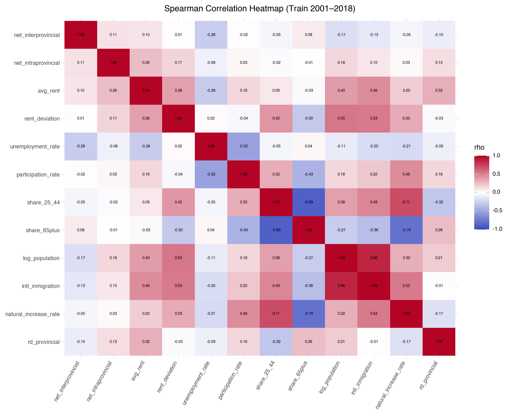
CMA size cutoffs: Small <= 160,702; Medium <= 416,871; Large > 416,871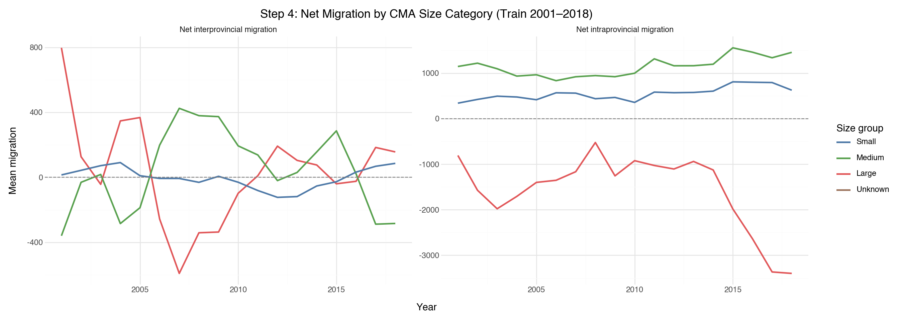
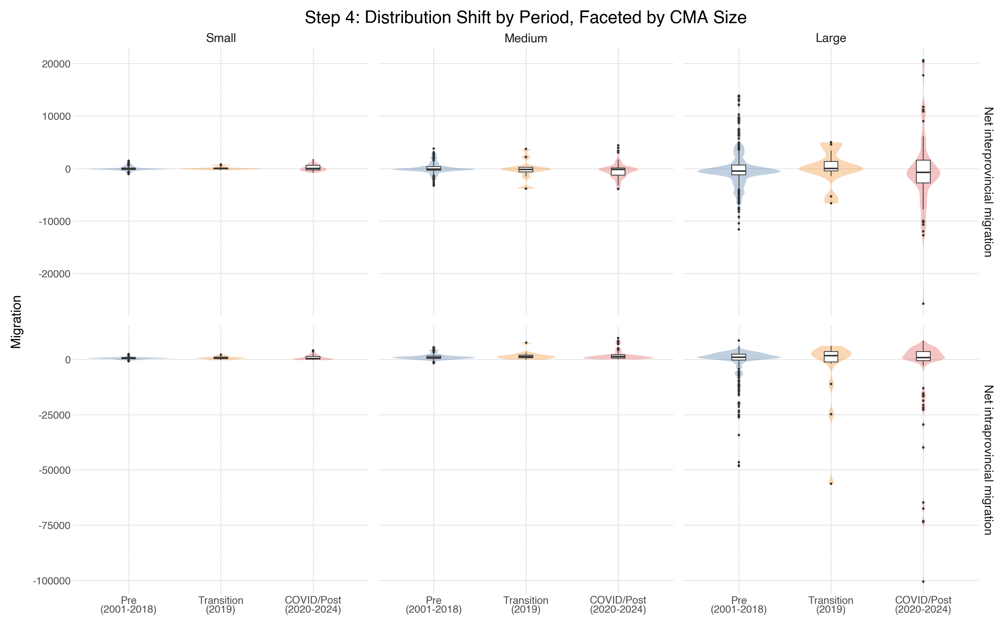
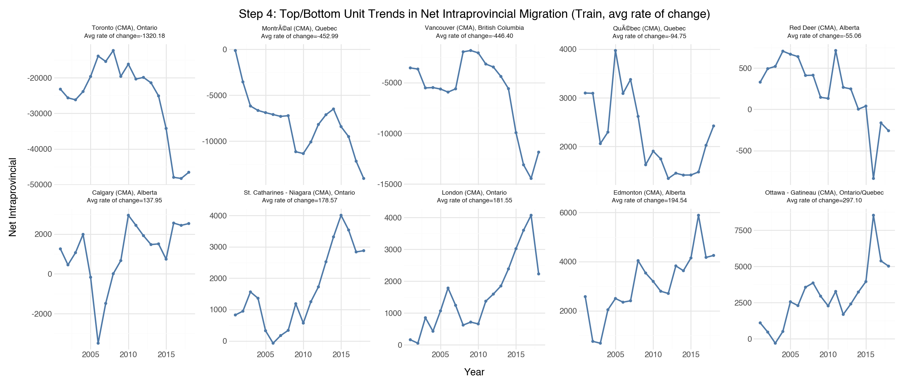
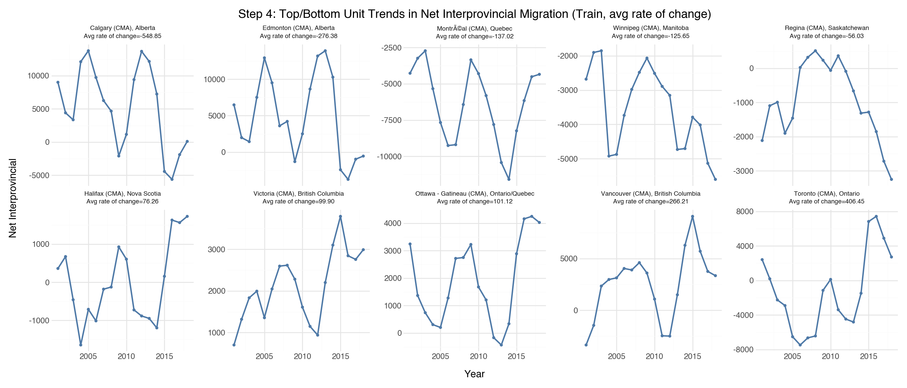
geo_key 0
year 0
net_interprovincial 0
net_intraprovincial 0
geo_name 0
geo_type 0
province 0
avg_rent 0
share_25_44 0
share_65plus 0
population 0
intl_inmigration 0
natural_increase_rate 0
unemployment_rate 0
participation_rate 0
rd_provincial 0
rent_deviation 0
log_population 0
cma_size 0
dtype: int64| feature | vif | |
|---|---|---|
| 6 | log_population | 1452.372884 |
| 3 | participation_rate | 1203.638884 |
| 4 | share_25_44 | 539.089757 |
| 5 | share_65plus | 159.539276 |
| 0 | avg_rent | 28.533527 |
| 2 | unemployment_rate | 27.356533 |
| 11 | cma_size_Small | 10.407923 |
| 8 | natural_increase_rate | 9.271075 |
| 10 | cma_size_Medium | 5.020053 |
| 9 | rd_provincial | 3.619517 |
| 7 | intl_inmigration | 3.561374 |
| 1 | rent_deviation | 2.885349 |
Step 5 — RQ1: Linear Models with Time-Series CV
from sklearn.base import clone
from sklearn.compose import ColumnTransformer
from sklearn.linear_model import Lasso, LinearRegression, Ridge
from sklearn.model_selection import GridSearchCV, TimeSeriesSplit
from sklearn.pipeline import Pipeline
from sklearn.preprocessing import OneHotEncoder, StandardScaler
import statsmodels.formula.api as smf
train_model = train.assign(cma_size=train["geo_key"].map(size_map).fillna("Unknown"))
test_model = test.assign(cma_size=test["geo_key"].map(size_map).fillna("Unknown"))
base_feats = ["rent_deviation", "unemployment_rate", "share_65plus", "intl_inmigration", "cma_size"]
outcome_specs = [
("net_interprovincial", base_feats + ["rd_provincial"]),
("net_intraprovincial", base_feats),
]
alpha_grid = np.logspace(-3, 2, 25)
def score_regression(y_true, y_pred):
y_true = np.asarray(y_true, dtype=float)
y_pred = np.asarray(y_pred, dtype=float)
rmse = float(np.sqrt(np.mean((y_true - y_pred) ** 2)))
denom = float(np.sum((y_true - y_true.mean()) ** 2))
r2 = float(1 - np.sum((y_true - y_pred) ** 2) / denom) if denom > 0 else np.nan
return r2, rmse
def make_year_splits(df, n_splits=5):
years = np.array(sorted(df["year"].unique()))
tscv = TimeSeriesSplit(n_splits=n_splits)
splits = []
for train_year_idx, val_year_idx in tscv.split(years):
train_years = set(years[train_year_idx])
val_years = set(years[val_year_idx])
train_idx = np.flatnonzero(df["year"].isin(train_years).to_numpy())
val_idx = np.flatnonzero(df["year"].isin(val_years).to_numpy())
splits.append((train_idx, val_idx))
return splits
def build_pipeline(feats, model):
num_feats = [f for f in feats if f != "cma_size"]
cat_feats = [f for f in feats if f == "cma_size"]
preprocessor = ColumnTransformer(
[
("num", StandardScaler(), num_feats),
("cat", OneHotEncoder(drop="first", handle_unknown="ignore"), cat_feats),
],
remainder="drop",
)
return Pipeline([("preprocessor", preprocessor), ("model", model)])
# All three candidates are scored on the same 5 time-based folds.
# Only Ridge/Lasso additionally tune alpha within those folds.
candidate_models = {
"OLS": (LinearRegression(), None),
"Ridge": (Ridge(), {"model__alpha": alpha_grid}),
"Lasso": (Lasso(max_iter=20000), {"model__alpha": alpha_grid}),
}
step5_vif_frames = []
model_rows = []
for outcome, feats in outcome_specs:
cols = ["year", outcome] + feats
tr = train_model[cols].dropna().sort_values("year").reset_index(drop=True)
te = test_model[cols].dropna().sort_values("year").reset_index(drop=True)
X_train, y_train = tr[feats], tr[outcome]
X_test, y_test = te[feats], te[outcome]
cv_splits = make_year_splits(tr, n_splits=5)
vif_X = (
pd.get_dummies(X_train, columns=["cma_size"] if "cma_size" in X_train.columns else None, drop_first=True, dtype=float)
.replace([np.inf, -np.inf], np.nan)
.dropna()
)
step5_vif_frames.append(
pd.DataFrame(
{
"outcome": outcome,
"feature": vif_X.columns,
"vif": [float(variance_inflation_factor(vif_X.values, i)) for i in range(vif_X.shape[1])],
}
).sort_values("vif", ascending=False)
)
for model_name, (model_obj, tuning_grid) in candidate_models.items():
pipe = build_pipeline(feats, model_obj)
if tuning_grid is not None:
search = GridSearchCV(
pipe,
param_grid=tuning_grid,
scoring="neg_root_mean_squared_error",
cv=cv_splits,
n_jobs=-1,
refit=True,
)
search.fit(X_train, y_train)
best_estimator = search.best_estimator_
best_alpha = float(search.best_params_["model__alpha"])
else:
best_estimator = pipe.fit(X_train, y_train)
best_alpha = np.nan
cv_fold_scores = []
for fold_train_idx, fold_val_idx in cv_splits:
fold_estimator = clone(best_estimator)
fold_estimator.fit(X_train.iloc[fold_train_idx], y_train.iloc[fold_train_idx])
fold_pred = fold_estimator.predict(X_train.iloc[fold_val_idx])
fold_r2, fold_rmse = score_regression(y_train.iloc[fold_val_idx], fold_pred)
cv_fold_scores.append((fold_r2, fold_rmse))
p_test = best_estimator.predict(X_test)
r2_test, rmse_test = score_regression(y_test, p_test)
model_rows.append({
"outcome": outcome,
"model": model_name,
"n_train": int(len(tr)),
"cv_r2_mean": float(np.mean([s[0] for s in cv_fold_scores])),
"cv_r2_sd": float(np.std([s[0] for s in cv_fold_scores], ddof=1)),
"cv_rmse_mean": float(np.mean([s[1] for s in cv_fold_scores])),
"cv_rmse_sd": float(np.std([s[1] for s in cv_fold_scores], ddof=1)),
"alpha": best_alpha,
"n_test": int(len(te)),
"r2_test": r2_test,
"rmse_test": rmse_test,
})
step5_vif_df = pd.concat(step5_vif_frames, ignore_index=True).sort_values(["outcome", "vif"], ascending=[True, False]).reset_index(drop=True)
model_results_df = pd.DataFrame(model_rows).sort_values(["outcome", "cv_rmse_mean", "model"]).reset_index(drop=True)
display(step5_vif_df)
display(model_results_df)
# Train-set OLS summaries for interpretation; CV selection above is unchanged.
for outcome, feats in outcome_specs:
cols = [outcome] + feats
tr = train_model[cols].dropna().copy()
formula = f"{outcome} ~ " + " + ".join("C(cma_size)" if feat == "cma_size" else feat for feat in feats)
fit = smf.ols(formula, data=tr).fit(cov_type="HC3")
print(f"\nOLS summary — {outcome}")
print(fit.summary())| outcome | feature | vif | |
|---|---|---|---|
| 0 | net_interprovincial | share_65plus | 14.319422 |
| 1 | net_interprovincial | unemployment_rate | 10.256138 |
| 2 | net_interprovincial | rd_provincial | 3.029494 |
| 3 | net_interprovincial | cma_size_Small | 2.810674 |
| 4 | net_interprovincial | cma_size_Medium | 2.263025 |
| 5 | net_interprovincial | intl_inmigration | 2.079913 |
| 6 | net_interprovincial | rent_deviation | 1.890920 |
| 7 | net_intraprovincial | share_65plus | 11.266205 |
| 8 | net_intraprovincial | unemployment_rate | 10.254731 |
| 9 | net_intraprovincial | cma_size_Small | 2.655141 |
| 10 | net_intraprovincial | cma_size_Medium | 2.221758 |
| 11 | net_intraprovincial | intl_inmigration | 2.048295 |
| 12 | net_intraprovincial | rent_deviation | 1.866121 |
| outcome | model | n_train | cv_r2_mean | cv_r2_sd | cv_rmse_mean | cv_rmse_sd | alpha | n_test | r2_test | rmse_test | |
|---|---|---|---|---|---|---|---|---|---|---|---|
| 0 | net_interprovincial | Lasso | 720 | 0.064354 | 0.175219 | 2452.590196 | 502.966979 | 9.085176 | 200 | 0.096353 | 3994.595459 |
| 1 | net_interprovincial | OLS | 720 | 0.062401 | 0.183469 | 2453.033959 | 497.535919 | NaN | 200 | 0.098633 | 3989.553898 |
| 2 | net_interprovincial | Ridge | 720 | 0.062402 | 0.183468 | 2453.034146 | 497.536845 | 0.001000 | 200 | 0.098633 | 3989.554456 |
| 3 | net_intraprovincial | Ridge | 720 | 0.801540 | 0.105628 | 2233.285872 | 1618.841062 | 1.333521 | 240 | 0.628118 | 7850.357862 |
| 4 | net_intraprovincial | OLS | 720 | 0.801396 | 0.104007 | 2234.002360 | 1610.767503 | NaN | 240 | 0.629469 | 7836.089280 |
| 5 | net_intraprovincial | Lasso | 720 | 0.801396 | 0.104007 | 2234.003072 | 1610.768056 | 0.001000 | 240 | 0.629469 | 7836.091579 |
OLS summary — net_interprovincial
OLS Regression Results
===============================================================================
Dep. Variable: net_interprovincial R-squared: 0.135
Model: OLS Adj. R-squared: 0.126
Method: Least Squares F-statistic: 12.84
Date: Fri, 13 Mar 2026 Prob (F-statistic): 1.34e-15
Time: 04:40:47 Log-Likelihood: -6591.8
No. Observations: 720 AIC: 1.320e+04
Df Residuals: 712 BIC: 1.324e+04
Df Model: 7
Covariance Type: HC3
=========================================================================================
coef std err z P>|z| [0.025 0.975]
-----------------------------------------------------------------------------------------
Intercept 3870.6203 928.550 4.168 0.000 2050.695 5690.546
C(cma_size)[T.Medium] -358.2146 247.695 -1.446 0.148 -843.689 127.259
C(cma_size)[T.Small] 11.1874 224.878 0.050 0.960 -429.565 451.940
rent_deviation 6.5180 1.056 6.171 0.000 4.448 8.588
unemployment_rate -322.7564 52.306 -6.171 0.000 -425.275 -220.238
share_65plus -6981.0800 3045.395 -2.292 0.022 -1.29e+04 -1012.215
intl_inmigration -0.0513 0.014 -3.755 0.000 -0.078 -0.025
rd_provincial -0.0293 0.014 -2.052 0.040 -0.057 -0.001
==============================================================================
Omnibus: 246.903 Durbin-Watson: 0.438
Prob(Omnibus): 0.000 Jarque-Bera (JB): 2673.671
Skew: 1.215 Prob(JB): 0.00
Kurtosis: 12.122 Cond. No. 6.71e+05
==============================================================================
Notes:
[1] Standard Errors are heteroscedasticity robust (HC3)
[2] The condition number is large, 6.71e+05. This might indicate that there are
strong multicollinearity or other numerical problems.
OLS summary — net_intraprovincial
OLS Regression Results
===============================================================================
Dep. Variable: net_intraprovincial R-squared: 0.777
Model: OLS Adj. R-squared: 0.775
Method: Least Squares F-statistic: 41.04
Date: Fri, 13 Mar 2026 Prob (F-statistic): 5.09e-43
Time: 04:40:47 Log-Likelihood: -6610.5
No. Observations: 720 AIC: 1.324e+04
Df Residuals: 713 BIC: 1.327e+04
Df Model: 6
Covariance Type: HC3
=========================================================================================
coef std err z P>|z| [0.025 0.975]
-----------------------------------------------------------------------------------------
Intercept 5339.8392 542.245 9.848 0.000 4277.059 6402.620
C(cma_size)[T.Medium] -1620.0324 266.465 -6.080 0.000 -2142.294 -1097.771
C(cma_size)[T.Small] -2113.5791 220.711 -9.576 0.000 -2546.164 -1680.994
rent_deviation 3.2915 1.685 1.954 0.051 -0.011 6.594
unemployment_rate -80.4618 25.939 -3.102 0.002 -131.302 -29.622
share_65plus -1.194e+04 2620.770 -4.556 0.000 -1.71e+04 -6803.314
intl_inmigration -0.3068 0.029 -10.665 0.000 -0.363 -0.250
==============================================================================
Omnibus: 674.584 Durbin-Watson: 0.466
Prob(Omnibus): 0.000 Jarque-Bera (JB): 66672.140
Skew: -3.790 Prob(JB): 0.00
Kurtosis: 49.529 Cond. No. 6.35e+05
==============================================================================
Notes:
[1] Standard Errors are heteroscedasticity robust (HC3)
[2] The condition number is large, 6.35e+05. This might indicate that there are
strong multicollinearity or other numerical problems.